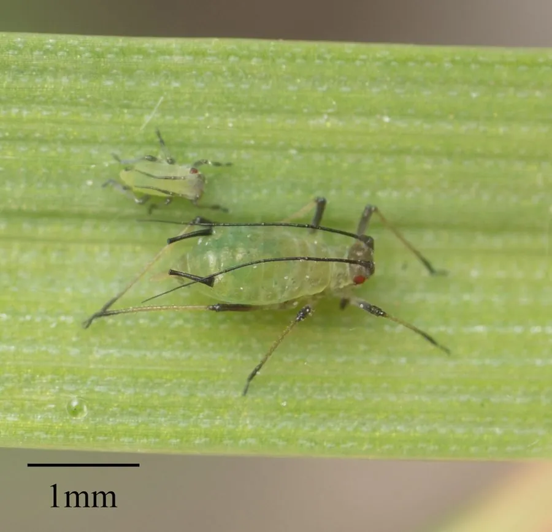

昆虫 · 动物界
麦长管蚜 Sitobion avenae

麦类作物上最常见的蚜虫之一，体色淡绿至黄绿，腹管长而黑，群集在麦穗和叶背吸食汁液，是小麦的重要害虫。
- 分类
- 门节肢动物门纲昆虫纲目半翅目科蚜科属长管蚜属
- 栖息环境
- 麦类作物的麦穗、旗叶和叶背，也见于禾本科杂草
- 地理分布
- 全球麦作区广泛分布，中国各小麦产区均有
- 保护级别
- 暂无评估
物种志
麦长管蚜的无翅孤雌蚜体长 2.4–3.0 mm，体色淡绿至黄绿色，体表覆有稀疏的白色蜡粉。腹管长而呈黑色，明显长于尾片，这一特征可与麦二叉蚜区分；有翅型胸部深褐，翅透明，触角第三节生有圆形次生感觉圈。
麦长管蚜分布几乎遍及全球麦作区，是麦类作物上的主要害虫之一。它以孤雌胎生方式在麦株上迅速繁殖，群集于麦穗、旗叶和叶背刺吸汁液，造成叶片发黄、麦粒干瘪，严重时整株枯死；它排出的蜜露还会诱发煤污病，遮蔽叶片影响光合作用。在长江中下游麦区，它同时是小麦黄矮病毒的传播媒介。防治以抗虫品种、保护天敌和适期药剂防治为主，瓢虫、草蛉、蚜茧蜂和食蚜蝇是它最重要的自然天敌。
形态与习性
- 食性刺吸小麦、大麦、燕麦等禾本科植物的汁液
- 体长无翅孤雌蚜 2.4–3.0 mm
- 繁殖以孤雌胎生为主，条件不利时产生有翅迁移蚜
- 危害群集麦穗和叶背吸汁，造成叶片发黄、麦粒干瘪
- 传毒是小麦黄矮病毒的传播媒介
- 天敌瓢虫、草蛉、蚜茧蜂和食蚜蝇
趣味知识
- 麦长管蚜的腹管明显长于尾片，这是把它与麦二叉蚜区分开的简便特征。
- 它排出的蜜露会诱发煤污病，使叶片蒙上一层黑色霉层。
- 一头孤雌蚜在适宜条件下可繁殖出数十头后代，种群增长极快。